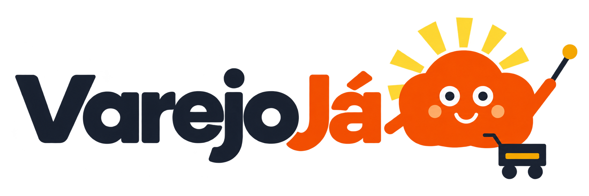

Picos de acesso
Na Black Friday, muita gente entra ao mesmo tempo e o site pode travar.
Na nuvem: a capacidade cresce sob demanda.
Projeto final · AWS re/Start
Uma proposta de modernização para a VarejoJá ganhar escala, disponibilidade e segurança com uma arquitetura planejada na AWS.
Uma solução pensada para acompanhar cada novo pedido.

O desafio
A infraestrutura legada atual cria tetos. A nuvem dá espaço para crescer.
Na Black Friday, muita gente entra ao mesmo tempo e o site pode travar.
Na nuvem: a capacidade cresce sob demanda.Se um componente centralizado falha, a loja inteira pode sair do ar.
Na nuvem: duas zonas, e uma assume a outra.Fotos e vídeos em disco local dificultam expandir e entregar rápido.
Na nuvem: o espaço cresce e a entrega é rápida.Backups mensais manuais aumentam o risco de perda de informações.
Na nuvem: os backups são automáticos.O desafio: crescer sem comprometer a operação.
Da proposta à prática
Cada peça da arquitetura tem um motivo para estar lá.
Computação
Picos de acesso: aumenta a quantidade de servidores quando o movimento sobe.
Rede e distribuição
Reparte os clientes e entrega fotos e vídeos rapidamente.
Dados e armazenamento
Banco disponível, consultas rápidas e espaço para as mídias da loja.
Backup e recuperação
Mais proteção para recuperar dados em caso de falhas ou exclusões acidentais.
Segurança e observabilidade
Controla acessos e avisa a equipe quando algo sai do normal.
Visão da solução
Uma visão da infraestrutura proposta e do caminho planejado para a migração.

Selecione um diagrama para visualizar em tamanho maior.
Quem faz acontecer
Pessoas com diferentes olhares, colaborando para construir uma proposta completa.
Papel na proposta